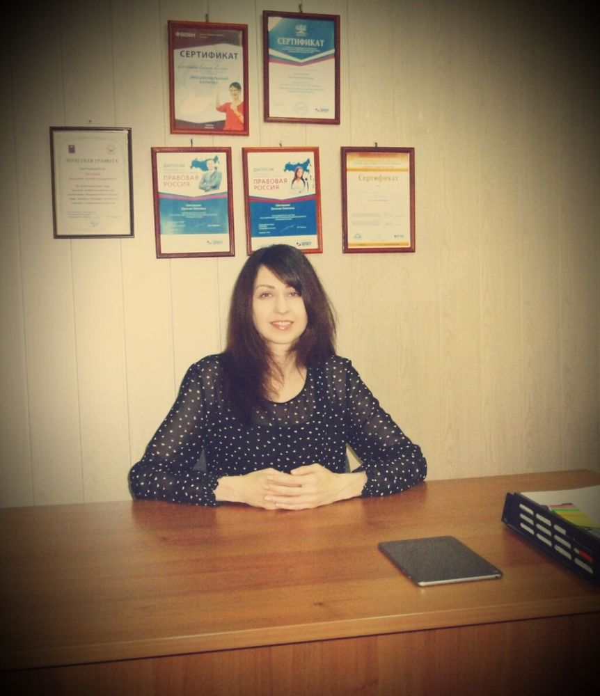

Почему именно я
Здравствуйте! Меня зовут Евгения Олеговна Светашова. Я - юрист.
Вы спросите: "ПОЧЕМУ ШКОЛА?"
Отвечу:
"ПЕРВОЕ. ЧТОБЫ ВЫ СОХРАНИЛИ СВОИ ДЕНЬГИ!"
Нужно учиться решать свои проблемы самому. И не надо этого бояться. Бояться нужно прийти к ГУРУ, который мудрёно бубнит, потом сообщает: "Суд нас всех спасёт!" и тут же ценник выставляет. А Вы даже понять не можете, что вообще происходит...↔Пример - юркомпании со ВСПЛЫВАЮЩИМИ окошками:→"Оставьте только номер. Мы сами перезвоним, решим вашу проблему. Это ж дело нашей жизни ваши проблемы решать…" (словно рыбки золотые), посадили мальчиков-девочек (вчерашних студентов в колл-центр), а те и рассказывают сказки Андерсона. Потом контракт, суды, бумажки… выиграли/не выиграли - дело десятое. "Мы же работали..."↔Зашибись логика! Перспективу дела не оценили или вообще взяли дело проигрышное, а клиенту "забыли" сообщить, что оно таковое (понятно, память-то девичья!). Человек ждал положительного для себя результата, а в итоге сходил на экскурсию за свой счёт. И экскурсия эта обошлась, ох, как недёшево↔Средний чек судебного процесса - 50 000 рублей...
Именно поэтому каждому важно обладать знаниями о том, как работает юридическая машина, чтобы управлять ею и не попасть под колёса!
"ВТОРОЕ. ЧТОБЫ СКЕЛЕТЫ, КОТОРЫЕ ИМЕЮТСЯ У КАЖДОГО, ОСТАВАЛИСЬ В ШКАФАХ"
Обращение к юристу - это исповедь (не побоюсь такого громкого слова). Приходится предавать огласке свою историю, жизненную проблему, чаще всего связанную с близкими люди, с которыми сложилась конфликтная ситуация (долги, ссоры, развод, раздел имущества и т.д.). Положение, когда нужно рассказать о семейных дрязгах чужому человеку, является дискомфортным. И это естественно! Таким образом, ШКОЛА привлекательна с точки зрения личной этики.→Душу наизнанку постороннему выворачивать не нужно!↔Прослушали тему и всё.
"ТРЕТЬЕ. ЧТОБЫ НИКТО НЕ СМЕШИВАЛ ВАС ГРЯЗЬЮ!"
Каждый недоумевал: "Почему госслужащий глух к моей проблеме?!" Или кланялся её величеству паспортистке! Справочка же нужна была…
Уважение к себе - вот это результат! И он у вас будет!
"ЧЕТВЁРТОЕ. ЧТОБЫ ПОЛУЧИТЬ НАКОНЕЦ-ТО ОТВЕТ НА ВОПРОС, ПОЧЕМУ ЧИНОВНИКИ ТАКИЕ, А МЫ ДРУГИЕ"
Галина Васильевна Кудеярова рассказала мне следующее: "Я давно на пенсии. Мне 78 лет. Пошла на приём. Долго ждала. В итоге рассказываю о своей проблеме, а она меня даже не слушает! И это называется "общественная приёмная"? В другом месте вообще сказали: "Уходите! Я не буду с вами разговаривать!" ↓
Приходите в ШКОЛУ! И от Вас больше не отмахнутся, словно от назойливой мухи!
"ПЯТОЕ. ЧТОБЫ ВАШИ ДЕТИ БЫЛИ В БЕЗОПАСНОСТИ!"
Уголовная ответственность наступает с 14 лет, и, естественно, лучше предупредить, чем потом (воспользуюсь врачебным лексиконом) лечить...→ШКОЛА предоставляет правильное информирование об основах уголовного права. Подросткам. Родителям.
Кто я
- Диплом с отличием СГУ.
- Опыт работы - 7 лет.
- Сотрудничество с адвокатами в уголовных делах: подготовка жалоб, ходатайств, судебных речей.
- Представительство граждан - Государственная жилищная инспекция, прокуратура Ленинского района, администрации районов МО "Город Саратов", Управление федеральной службы судебных приставов по Саратовской области (а также районные отделы), полиция (отделы №4, №5), Росреестр, Комитет по управлению имуществом города Саратова, включая Отдел по приватизации жилых помещений и Государственный земельный надзор, управляющие компании: "Наш Дом", "Дома Контакт", "Биотит+", "Стабильность", "Арбаттеплострой", "Прогресс".
- Судебная практика - выиграны все дела.
СВЕТАШОВА ЕВГЕНИЯ ОЛЕГОВНА - юрист, спикер, экспертность - межличностная коммуникация.
Уникальность
Вы скажите: "Мне это не нужно. Когда понадобится, я просто найму юриста"
↓ Да, вы пойдёте к юристу. Это будет означать, что у вас уже есть проблема!
Уникальность ШКОЛЫ – предупреждение проблем. Учитесь ДО, а не после!
- Все секреты юристов здесь.
- Понятны для всех.
- Без возрастных ограничений: от школьника до долгожителя.
- Обладать базовыми знаниями не нужно.
- Доступность:
Вместо 5500. - стоимость одного семинара 300 рублей. Да, вы не попьёте разочек кофе, но ваше благополучие того стоит!
Предложение ограничено. Действует только в указанные даты! 21 день – вашего триумфа! Успейте посетить все семинары до повышения цен!
Расписание семинаров и название тем
Регламент: продолжительность 1 час + ответы на все вопросы (даже если они не по теме занятия)
- Кредитные карты. Узнайте, о чём умалчивают банки.
- Как "раскусить" договор.→Вы сможете найти подводные камни в любом договоре.
- Сам себе риэлтор. Получи́те полнейшую осведомлённость о купле-продаже квартиры.
- Заберите умение – "Я получаю желаемый результат от бюджетника за 1 минуту"
- Жёсткое и мягкое (самое опасное) давление→Здесь ваша информированность о скрытых принципах работы финансовых организаций
- Справедливости в суде нет!→Развеем вредный миф! (включая уголовную ответственность подростков)
- "Я не могу разговаривать с чиновниками(((" → Научим легко составлять
- Главные ошибки поведения в госучреждениях. Или→Как перестать флиртовать с администрацией.
- "Мне хамит паспортист!" → Совместите психотип вежливого человека с юриспруденцией. И вы с лёгкостью сможете перешагнуть через любую неучтивость.
- Психотип – ГОССЛУЖАЩИЙ. Как формируется. Кто виноват. Что делать.
- О юридических компаниях "со всплывающими окошками": как отличить юриста от Кашпировского.
- Переговорам в семье быть!↔Вы сможете договориться даже с негативным родственником.
- Он: "Нужны колёса" Она: "Хочу шубу!" →Брак и деньги. Ваше умение совместить. Здесь!
- О стадиях развода. То, о чём вы не знаете.→Предупреждён, значит вооружён!
- Внимание уловки торговых центров!→Вас приветствует Гид финансовой стабильности.
- "Мы разговариваем на разных языках!». Про барьеры коммуникации.
- "Только не ругайтесь" - топ самых бестолковых пожеланий молодым.→Скандал – это нахождение общего. Узнайте правила скандала.
- Вы интроверт?→Специально для интровертов приёмы успешного общения.
- Есть дети?→О вербовке подростков. Правда об уголовном наказании.
- Для подростков и родителей→Как через дружбу попадают в тюрьму.→ "Я просто рядом стоял!" – логика подростка, которая не работает.
- О наркотиках с точки зрения "тёмной стороны" закона.↔Родителям и детям.
Внимание! Такого больше нет нигде! Станьте частью новой культуры!
Здесь не просто юриспруденция! Здесь живое право +опыт+психология!
"Законы созданы не для того, чтобы пылиться на полках. Они должны применяться в жизни обычных людей! Таких, как мы с вами!" юрист Е.О. Светашова
КОНТАКТЫ
Школа Современного Юриста Е.О. Светашовой
Адрес: ___________
Сайт: ____________
Телефон +7-937-807-06-96
E-mail: e.o.svetashova@gmail.com
VK: https://vk.com/advokaty64